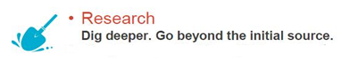
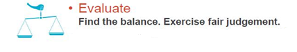

During the information gathering stage of project work, students use a range of printed and electronic resources. Each resource requires a certain skill set when accessing and using them. Librarians who have been helping students during the information gathering stage, have identified some skills students should possess to make them information literate. To help students become competent in using these resources, NLB has developed an IL programme. Let us learn more about this programme and its outcomes.
Click on the components of the programme to know more.
- SOURCE
Examples of credible and reliable sources of information: Journals, expert opinions, databases, government websites
- UNDERSTAND
- RESEARCH

Cross check your information with a few other sources to ensure that it is correct and current before you decide if you want to include the information in your report. You may want to use a commonly used research model, Big6, to conduct your research. For more information about this research model, refer to the infographic (Six steps to success):
http://www.nlb.gov.sg/sure/wp-content/uploads/2013/11/six-steps-to-success.jpg
- EVALUATE

You can use the 5-finger test to determine the credibility of an online information source. For more information about the 5-finger test, refer to the infographic (The power of the click and tell):
http://www.nlb.gov.sg/sure/wp-content/uploads/2014/02/NILP-inforgraphics-lowres.pdf
We will next explore the factors to be considered during project work assignment.
Click Next to continue.